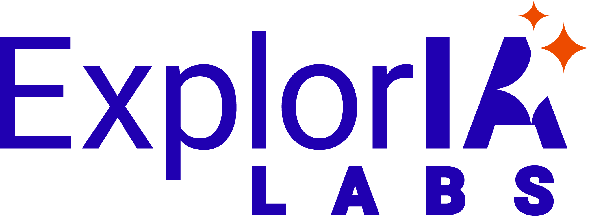

explorialabs.comNathalie Benchetrit dirige Assur Connect, courtier spécialisé dans l’assurance des sportifs. Avec ExplorIA Labs, elle a mis en place un agent IA qui prépare l’analyse des dossiers et les réponses aux réclamations. Chaque réponse est relue par un gestionnaire avant l’envoi.
Son organisation avant le projet, ce que fait l’agent au quotidien, le temps gagné, la traçabilité dans un métier très contrôlé, et ses conseils aux dirigeants qui veulent se lancer.
Vous souhaitez intégrer l’IA dans votre entreprise, sans perdre la main sur ce qui compte ?
Échanger avec ExplorIA LabsVidéo partagée à titre privé : merci de ne pas la diffuser.